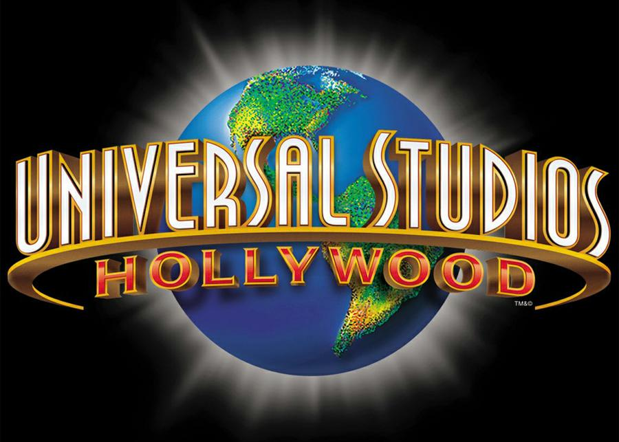
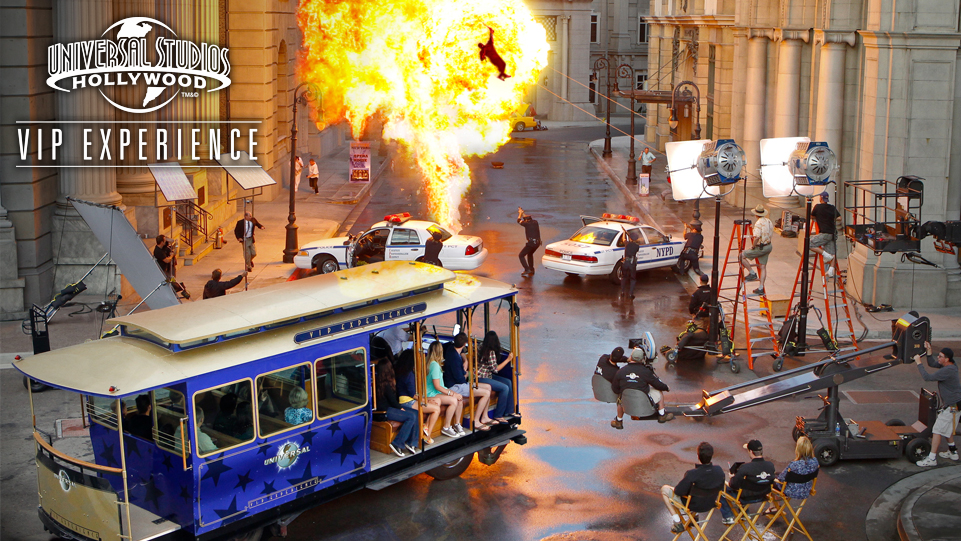
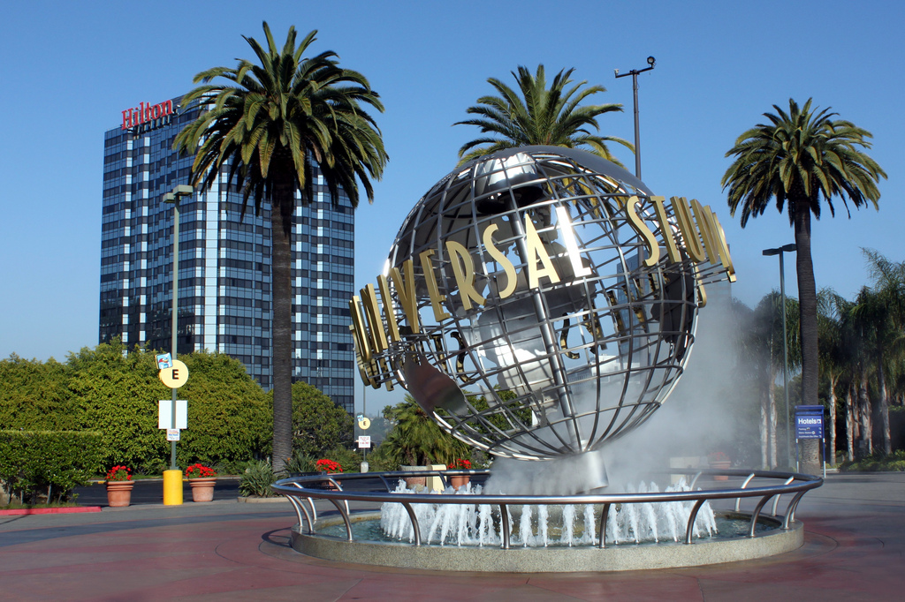
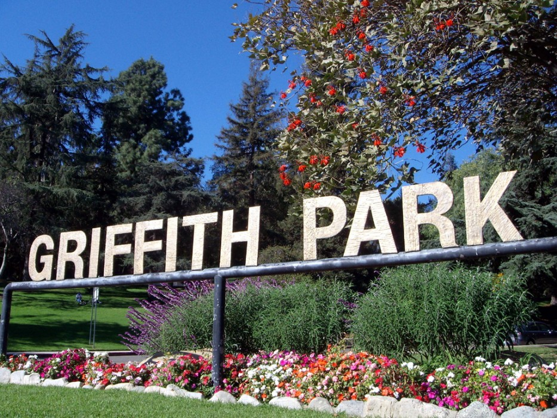
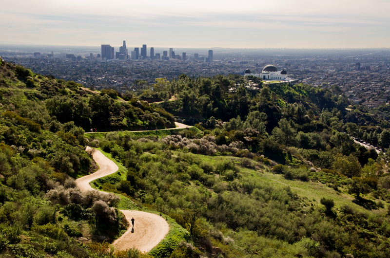
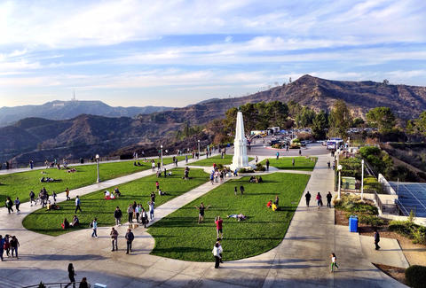
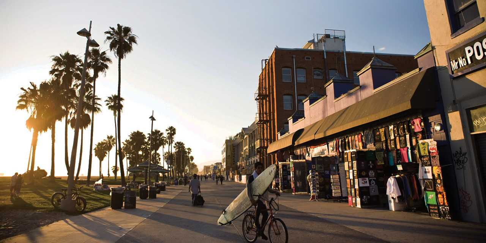
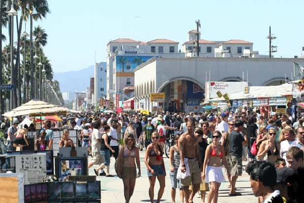
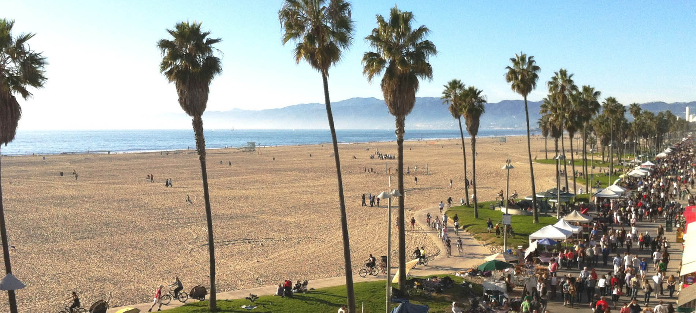

Homepage

History

Culture

Events

Tourism

Resorts

The sprawling city of Los Angeles, in Southern California, has long been known internationally in the film and entertainment
industry, particularly for Hollywood, a place that has drawn aspiring actors and actresses from across the country for almost
a century. Today, LA is a culturally diverse city, with a growing culinary scene, incredible shopping, outstanding museums,
and a reputation for being the creative center of America. Sun seekers coming to enjoy the warm climate and beaches will find
all kinds of things to do and interesting neighborhoods to explore. Recent upgrades to the public transportation network and the
addition of a bike share program in downtown LA have made getting around and sightseeing easier than ever. For families, nearby
Disneyland and Universal Studios are key destinations that often warrant repeat visits. Regardless of your interests, Los Angeles
makes a perfect getaway.
DisclaimerAll events may be subject to date change on certain circumstances such as weather. And may be subject to price or hour changes. |
Places To Visit!
Universal Studios Hollywood is a film studio and theme park in the Universal City county island (unincorporated) area of the San Fernando Valley of Los Angeles County, California, United States. It is one of the oldest and most famous Hollywood film studios still in use. Its official marketing headline is "The Entertainment Capital of LA". It was initially created to offer tours of the real Universal Studios sets and is the first of many full-fledged Universal Studios Theme Parks located across the world. Woody Woodpecker is the official mascot for Universal Studios Hollywood. It is also the only amusement park that's entirely within the San Fernando Valley. Outside the theme park, a new, all-digital facility near the Universal Studios backlot was built in an effort to merge all of NBCUniversal's West Coast operations into one area. As a result, the current home for KNBC, KVEA and NBC News with Telemundo Los Angeles Bureaus with new digital facility is on the Universal lot formerly occupied by Technicolor SA. Universal City includes hotels Universal Hilton & Towers, the Sheraton Universal Hotel, the multi-screen Globe Theatre, often used for banquets and receptions and Universal CityWalk, which offers a collection of shops and restaurants. In 2013, the park hosted 6,148,000 guests, placing it 17th in the world and 9th among North American parks. |
|
|



|
|
Griffith Park
Griffith Park is a large municipal park at the eastern end of the Santa Monica Mountains, in the Los Feliz neighborhood of Los Angeles, California. The park covers 4,310 acres (1,740 ha) of land, making it one of the largest urban parks in North America. It is the second-largest city park in California, after Mission Trails Preserve in San Diego, and the 11th largest municipally owned park in the United States. It has also been referred to as the Central Park of Los Angeles[citation needed] but is much larger, more untamed, and rugged than its New York City counterpart. |
|
|



|
|
Venice Beach
Venice is a residential, commercial and recreational beachfront neighborhood within the California
city of Los Angeles, located in its greater Westside. Venice was founded in 1905 as a seaside resort
town. It was an independent city until 1926, when it merged with Los Angeles. Today, Venice is known
for its canals, beaches, and the circus-like Ocean Front Walk, a two-and-a-half-mile pedestrian-only
promenade that features performers, mystics, artists and vendors.
|
|
|



|
|
Website made by Tony Trinh
All Text and Content is property of myself and some referenced from Wikipedia , Google and various websites.
Graphics are from Google Images and Various Websites.